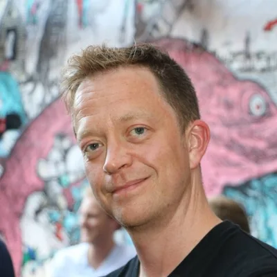

The doctor for the planet
Gareth ThompsonA doctor who realized the system itself was sick and spent five years searching for the connection between personal health and planetary health, and for a career path that truly connected his purpose. By the origin he had energy coursing through his body. By the quest we had to stop the conversation. He slept for ten hours and woke up having cracked the problem that had been defeating him for half a decade.
I feel like I have a new nervous system. I honestly feel like I have entered a different reality. I am synchronized at mind, body, spirit. The story is real. My story is real. The weak parts of my story are what make it strong. The story itself is invincible. Come at me with what you got. You cannot take it down. I am a scientist. I am a doctor. If anyone with a rational analytical mind is doubting this process, stop and listen. Throw everything you have got at this. Zachary is the real deal. The metamyth is the real deal. This is how it is done.